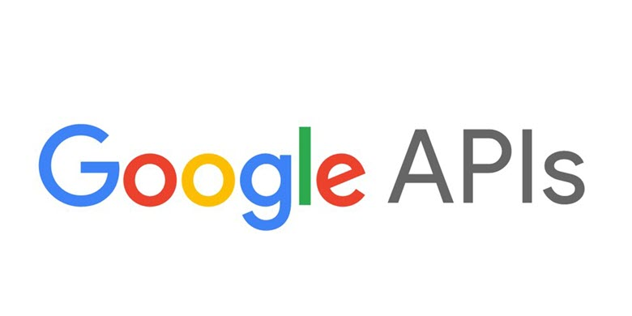

3. Website pages
3.1 Signup/ Login
The landing homepage will be composed by a login/signup form that would confirm us the user is indeed a student.
The email address and password combination inserted by the user will be confronted with the registered students from the database and will be provided access if matched. If the email is registered but the combination will not be the right one, the “Wrong username/password!” message will pop-up.
There will be also some username and password restrictions like username should have the following format abc123@xyz.abc and the password to have at least one capital letter and symbol. If the user isn’t registered, he will have to follow the sign-up form in order to access the website.
After the user gains access the main page will be displayed. On the upper part of the page we will place the main navigation menu where the user could follow the category of information he is interested in, together with our logo and a logout button.
At the bottom of every page the user can see 3 images for social media (Facebook, Instagram, Twitter). Every user can share information among others students and they can reach to more information that we are posting on social media.
3.2 Home page
The Home page view is based on structuring the most relevant information like: “Finding information around the world”, “Books covering specific medical domains” and “Latest news about medicine coming from professionals and trusted sources”.
The user can see images that is reflected to the specific link which is redirected to a specific page from the website.
This will be a gliding structure with arrows that would help us navigate between the options.
On the homepage the user will have the option to navigate easily to the most relevant pages. He can use either the buttons from the top of the page or the glider from the body of the page. Additionally, the user can land on the wanted page by using the search bar.
3.3 About us
The “About us” page will cover all the goals, mission and values together with the ideas behind creating the webpage and a short presentation of people in charge of the content and their vision.
Each team member will be represented with a picture and a resume covering the main achievements and activities of everyone. The user can click on each member picture and a popup with details will be displayed.
3.4 Info menu
The “Info” drop-down menu reveals four pages: “Data”, “Search”, “Books” and “Drugs”.
3.4.1 Data page
Data page will display a form where the user can simply filter the data on preference. The single constraint applied in the form is that the user must select one Medical condition. If the Continent, Country and City will be left blank, the report will generate information on a worldwide level.
Medical condition drop box will cover general data for example: common diseases, allergies, food intolerances, obesity factors etc.
The continent -> country -> city will work like a cascade meaning that if the user selects a city/country it will automatically fill the correspondent country/continent. There is also the possibility to choose the view on a continent / country level, leaving the fields on the level below empty.
The “generate” button action will trigger two table views and a chart that will feed with the data filtered by the user and will display some general statistics about the chosen medical condition.
After the data are generated the user can scroll down to see graphics made based on the data which was generated previous. These graphics and tables are generated according to completed fields from the begging of Data page.
For this page we use a Disease city.This file is containing info about the big cities from America based on some diseases. From this csv the data frame and graphics can be generated.
3.4.2 Search page
The Search page will offer the same action as the search bar, but as a plus there will be additional options for a detailed search.
The red flags on the map will be the most fit result for the search, but the user has also the option to check the “More?” checkbox to get similar Clinics or Hospitals that can help, but are on a longer distance relative to the point where the search is made.

The map located in the right part of the page will refresh based on the user choices, pointing out Clinics, Public/Private Hospitals and so on, together with the distance of the nearest point that can help with the related search topic. The search subject will be inserted in the text box and the region will be selected from the combo-box. For an alternative to the search the “More?” checkbox will be checked.
This page is based on Google Map API for searching hospital, clinics, libraries with medicine books and others. The user can check the on of the radio boxes and he can choose to find a specific thing on “Region” or a distance from him, based on device location.
3.4.3 Books page
The Books page will offer the opportunity to search for a medical book and get details on where you can find the book, date of publication, names of authors and others.
The list of books will filter automatically when the user types in the title wanted and will have the options to sort the results by date or name. For a more detailed look the user can double click on a title and the table will be completed with info about selected book.

The external source of data for this page is Books API from Google. That API is available in a number of popular programming languages (Java, Python, PHP and others). We can search for books with this API and the table with details will be fully with information generated from API. Google API Client Libraries
3.4.4 Drugs page
On the Info -> Drugs page the user will be able to search for a specific medicine and check information like side effects, dosage and main purpose of the drug. For the search the user will have multiple options. Either he can use the search box or can browse the main classes of medicines and the most searched drugs from the list.
Information about medication will be synthetized on Drugs page. Here will be displayed in the left part of the page the most common searches made by the users. If clicked, the images will display a detailed view of the drug, purpose, dosage, side effects and specific information if any.
In the right view, it will be displayed the most common classes of drugs, grouped by common purposes. Once clicked, each class will display a list with the drugs. The center of the page will be covered by the search text bar and button. Here the user can manually input the name of the drug to search it in.

Double click on a drug image, the user will be redirected to another page where he can see just information about that drug (name, administration, active ingredients, strength).

The external source of data for this page is the file: Products.
The file “Products.txt” contains information about drugs with the fields from Figure 8. For more pharmaceutical products can be used an API. It allows you to access DrugBank API endpoints to get information on drugs, drug products, and drug interactions. More information about this API : HERE
3.5 More
The “More” drop-down menu reveals three pages: “Symptom Checker”, “FAQ”, and “News”.
3.5.1 News page
The News page will list articles from popular websites or magazines related to medicine topics.
The user can search for specific news using the text box and he is able to sort by date (ascendant and descendent). If the user wants to read an article he needs to navigate on another website to read that article using the link.
For this page it will be used web scrapping with HtmlUnit where we cannot find API on the website from where we gather the latest news. For web scrapping is necessary basic knowledge about XPath (query language to select XML nodes). For more information: HERE
3.5.2 FAQ page
The FAQ page will try to make it easier for the new users to understand and cope with potential technical/informational difficulties and common misunderstandings.
F.A.Q. page has the purpose the help the user with the most common questions about general medical topics and functionality of the website. The questions will be listed in a table and once the user clicks on one of them, the answer will be shown on the right of the page.

3.5.3 Symptom checker page
The Symptom Checker page, is a web tool made with the use of an API in order to provide a diagnostic based on what information the user provides by answering some specific questions for example: the age, gender, the area of pain (if any), how is the pain reaching etc. in order to return a most likely disease/ affection that might occur. More information about this API : HERE
3.6 Contact page
The Contact page will make available for the user to message the page administrator regarding any issue. Contact page offers details on physical address, email and phone number and provides the option for the user to give a suggestion for improvement of the service.
The user will select a reason for the message by clicking on the combo-box and will type the message on details text box. Auxiliary contact information will be displayed on the right of the page.

4. Conclusion
As for the future plans, we will try to add new functionalities to our current platform and to keep all the data as accurate as possible, as well as updating all the current functionalities to get a better result in performance and to deliver the data in the best manner possible and in the meantime to improve the overall appearance and user-friendliness.
The continuous development of the website is due to constant improvement in the whole medicine and research industry, together with the IT industry continuous growth.
The continuous development of the website is due to constant improvement in the whole medicine and research industry, together with the IT industry continuous growth.
Projection Part (Part II)
1. Updates from Design Part
1.1 Profile page
This page is created for users. If the user wants to change the password or maybe he moved to another university.
1.2 Admin book page
This page is created for administrator. He must keep track of books and he can add more books in database using website. The admin can remove some books if those aren't available anymore.
1.3 Admin drug page
This page is created for administrator. He must keep track of drugs and he can add more drugs in database using website. The admin can remove some drugs if those aren't available anymore.
1.4 Admin user page
This page is created for administrator. He must keep track of users. The admin can remove users if they aren't used the website in the last 6 months. The administrator can send advertisment to some users if they wanted to access data that are not available for them. The advertisment will be sent trought email.
3. UML Diagram
3.1 DATA - Use Case

The students must to be logged to have the opportunity to navigate in DATA module. The student can generate the dataset only if he completed the necessary fields (medical condition, continent, country, city). The students can also interact with graph and view the data only if the dataset is generated.
In this module the students can look for some locations using Google Maps that is integrated in this website only if they will complete the field with location. They can choose the range of the search or on a specific region.
The administrator needs to load the necessary dataset which represent the source of information those are necessary for every student. He can modify access on this dataset depeding on category of users.
3.2 LIBRARY - Use Case
The students must be logged to view books details and drugs. They must search and select an specific book or drug depends on which page is the student. This module offers to students opportunity to check his healthy situation on "Symptom Checker" page.
The administrator can add and remove books/drugs using website. The books can be found using API from Google.
4. Input Data Format
| Input Data | Type, Size | Constraints | Output Data |
|---|---|---|---|
| Username | Varchar2(30) |
|
- |
| Password | Varchar2(255) |
|
|
| Varchar2(40) |
|
||
| University | Varchar2(255) |
|
|
| Medical condition | Varchar2(255) |
|
Filtered data |
| Continent | Varchar2(255) |
|
|
| Country | Varchar2(255) |
|
|
| City | Varchar2(255) |
|
|
| Location | Varchar2(30) |
|
Map generated with Google Maps |
| Region | Varchar2(255) |
|
|
| Range | Numeric(5) |
|
|
| Book name | Varchar2(255) |
|
List of books (JSON) |
| Drug name | Varchar2(255) |
|
|
| News | Varchar2(255) |
|
List of news (JSON) |
| Reason | Varchar2(255) |
|
- |
| Details | Varchar2(255) |
|
5. Design and implementation constraints
First of all, for the good development of the project and the compatibility of the tools used the OS used is Windows OS (7 or higher). Our server must support both HTTP and HTTPS connections with the clients.
Furthermore, JDK 1.8.0_201 is required to be used in order to develop the back-end functionalities, compilation, debugging etc. As an Integrated Development Environment, Eclipse-JEE-2018-12 that comes with Maven 3 embedded is a suitable choice for the project requirements.
The framework used in the Back-End development process is Spring, to be more specific the modules Spring Boot, Spring MVC and Spring Data for Java are required to be added as project dependencies with the help of Maven. In order to map Java objects into database tables Hibernate ORM framework was chosen in order to help us with this task. Another necessary framework, this time for Front End, is Bootstrap 4 for CSS styling and layout and jQuery 3.3.1 library to help in manipulating DOM objects easier and better JavaScript code writing.
Also, for the Front-End side of the app HTML5, CSS3 and JavaScript is necessary. In order to dynamically render pages from the server, Thymeleaf template engine will be used.
In order to generate the desired reports and persist data from the website such as registered users, orders, reviews, Oracle 12c database version 12.2.0.1 has been chosen for this task. Moreover, to make the connection to the database possible, JDBC8 java driver was installed.
The web server chosen is Apache Tomcat version 9.0.16, which comes bundled with Spring.
For the proper versioning of the app we decided to opt for Git as a Distributed Version Control System. Furthermore, we chosen GitHub as hosting service for the project storage.
5.1. Arhitecture
Model View Controller or MVC as it is popularly called, is a software design pattern for developing web applications. A Model View Controller pattern is made up of the following three parts:
- Model − The lowest level of the pattern which is responsible for maintaining data
- View - This is responsible for displaying all or a portion of the data to the user.
- Controller − Software Code that controls the interactions between the Model and View.
5.2. Responses
- 200 OK − Standard response for successful HTTP requests.
- GET -> contain entity correspond with request.
- POST -> contain entity describing the result.
- 201 Created - When an new user is created.
2xx SUCCESS
- 401 Unauthorize − Similar to 403 Forbidden. When the student wants to access some information and he is not logged on application.
- 411 Length Required - When the user introduce more chars then is necessary.
4xx Client errors
- 501 Not Implemented − Our web application is not implemented and after some time it won't implemented 100% and this error will appear frequently.
- 411 Length Required - When the user introduce more chars then is necessary.
5xx Server errors
- 420 Method Failure (Spring Framework) − A deprecated response used by the Spring Framework when a method has failed.
- 526 Invalid SSL Certificate - Maybe if out certificate is expired. This requires keeping track of expiration date of certificate.
Unofficial codes
6. Security
- The administrator is the only one who can configure the database and modify the access to users;
- HTTPS using “Let’s Encrypt” is a free, automated, and open certificate authority (CA), run for the public’s benefit. It is a service provided by the Internet Security Research Group (ISRG). More information about this here;
- Based on their role, each user role will have specific access to application functionalities;
- Authentication can be made with hash algorithm (SHA-256);
- Protection against SQL injection:
- Using ORM (Object-Relational Mapping) frameworks
- Validating input strings on the server side;
- Using command parameters;
- Explicitly cast inputs;
- Others.
- Protection against brute force:
- Amount of time a user is locked out;
- Counting failures over what time period;
- Preventing passwords leaked in data breaches;
- Others.
7. Security and integrity of data
To prevent data loss, an automatic backup of the database will be done regularly. Also, a history of the transactions done by logging all operations. Furthermore, the requests will be done transactional and all modifications in the database will be rolled back in case something unexpected occurs.
- Practices to assure data integrity, including:
- Data backup, which stores a copy of data in an alternate location;
- Access controls, including assignment of privileges;
- Input validation, to prevent incorrect data entry;
- Data validation, to certify uncorrupted transmission.
8. External services
8.1. Symptom Checker API

The students can enter their symptoms and will receive a list of possible diseases based on the integrated differential diagnosis engine. It will direct the students to more medical information and show him the right doctor category for further clarifications.
The students can also learn using this API indroducing different symptoms into API and keeping inform about the output.
This API has 5 Endpoints:
- GET Body locations
- GET Body sublocations
- GET Symptoms
- GET Symptoms in body sublocations
- GET Red flag text
- GET Issues
- GET Issues info
- GET Diagnosis
- GET Proposed symptoms
- GET Specialisations based on diagnosis
- GET Specialisations list
-
Body parts
-
Symptoms
-
Health issues
-
Diagnosis
-
Specialisations
Requests
Using Java Unirest the request is in that form:

If the server responses with 200 OK HTTP status code, the results are:

In this capture are just from the 100 items, first 4 issues, those are ordered by name (Ascendent). The data format from this API is JSON (JavaScript Object Notation).
8.2. Google Books API
Google Books API Family let bring Google Books features to sites. The new Google Books API lets developer performs programmatically most of the operations (interactively on the Google Books website).
Main features of Google Books API:
- Search and browse through the list of books that match a given query.
- View information about a book, including metadata, availability and price, links to the preview page.
- Manage your own bookshelves.
-
To require an API key:
- Open the Credentials page in the API Console.
- This API supports two types of credentials. Create whichever credentials are appropriate for your project:
- OAuth 2.0:Whenever your application requests private user data, it must send an OAuth 2.0 token along with the request. Your application first sends a client ID and, possibly, a client secret to obtain a token. You can generate OAuth 2.0 credentials for web applications, service accounts, or installed applications.
- API keys:A request that does not provide an OAuth 2.0 token must send an API key. The key identifies your project and provides API access, quota, and reports.
Requests
Example of GET for a single volume:

The results are in JSON data format:

8.3. DrugBank API
The DrugBank API provides data about clinical drugs for medicinal software and EMR software. It allows you to access DrugBank API endpoints to get information on drugs, drug products, and drug interactions. This API is organized around REST principles, with default responses in JSON format. This includes services for; Names, Products, Description, Indications, Adverse Effects and more. DrugBank includes tools to enter medications accurately, search for information, check for alerts, contraindications, side effects, drug-drug interactions and others. DrugBank is a curated pharmaceutical knowledge base for precision medicine, electronic health records, and drug discovery.
API Endpoint: https://api.drugbankplus.com/v1.
Supported Response Formats: CSV, JSON, XML.
DrugBank offers also database with drugs from entire world. Every request from this company must pay for this information because they don't have in educational scope. On their website we can find some drugs with description and a lot of information about interactions, pharmacology, clinical trials, pharmacoeconomics and other. More information here.
9. User guide
9.1. Case studies (screen captures)
9.1.1. Case study - Library
The student must be logged for this use case.
Step 1

The student navigated trough menu and select Books page.
Step 2

The student searched a book that contains "Heart diseases", after he pressed "Search" button. After he saw the results, he ordered the books ascendent by name.
Step 3

The student navigates to Drugs page.
Step 4

The student searched a drug named "Nurofen forte", after he pressed "Search" button. After he saw the description, he pressed on image that is for Nurofen Forte to see more details.
Step 5

The student viewed more details about "Nurofen Forte".
9.1.2. Case study - Data
The student must be logged for this use case.
Step 1

The student navigated trough menu and select Data page.
Step 2

The student searches "Neuronal problems" completing the specific field. He select continent, country, city and after pressed "Generate" button. He can see the filtered dataset. He clicked on dataset to see the specific graphs.
Step 3

The student viewed some data and the specific graph for filtered data.
Step 4

The student navigated to "Search" page.
Step 5

The student wanted to find "Hospital" by region (in Iasi). After he filled the fields he pressed on "Find" button.
9.1.3. Case study - Help
Step 1

The student wanted to read the terms of MedicineStudies.
Step 2

After the student read our terms he wanted to find more about our scope and information about our team.
Step 3

After he become informed about our team, the student wanted to know something about our location.
Step 4